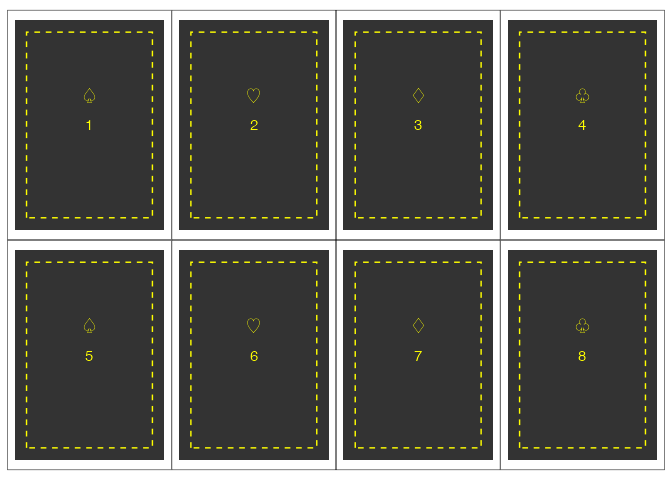
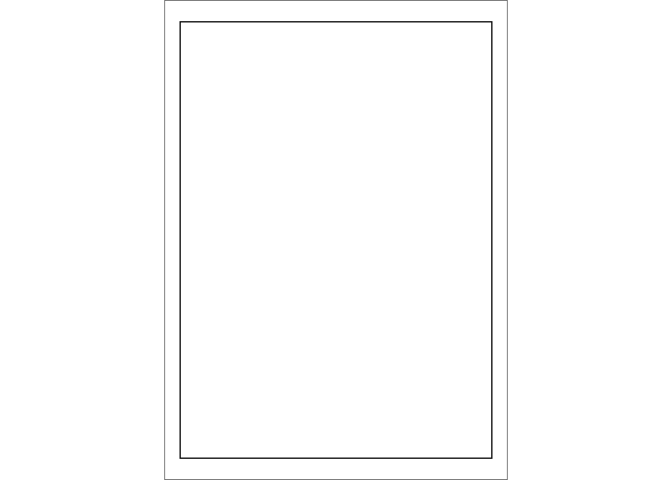
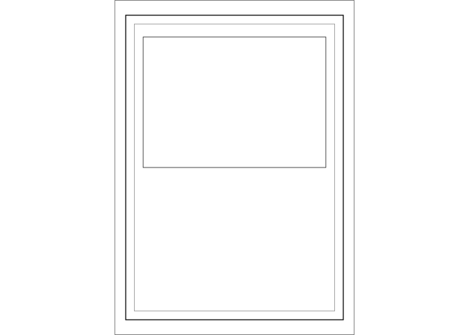
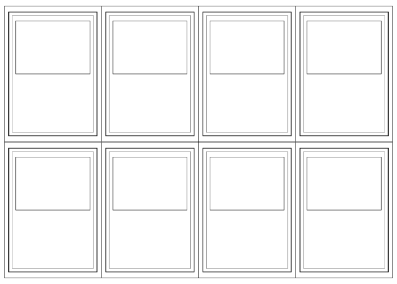

The goal of papersize is to provide you with convenience functions extending grid, ggplot2, and patchwork to help in sizing plots and files for printing to paper, postcards, playing cards, and other physical media.
Installation
You can install the development version of papersize like so:
# pak::pkg_install("elipousson/papersize")Example
papersize includes data on standard paper sizes including sizes for papers (ANSI, ISO, and other standards), photo prints, postcards, and playing cards.
get_paper("Letter")
#> name series size standard units width height orientation type asp
#> 19 Letter <NA> <NA> ANSI in 8.5 11 portrait paper 0.7727273
get_paper("Letter", orientation = "landscape")
#> # A data frame: 1 × 10
#> name series size standard units width height orientation type asp
#> * <chr> <chr> <chr> <chr> <chr> <dbl> <dbl> <chr> <chr> <dbl>
#> 1 Letter <NA> <NA> ANSI in 11 8.5 landscape paper 1.29
get_card("Poker")
#> # A data frame: 1 × 10
#> name series size standard units width height orientation type asp
#> * <chr> <chr> <chr> <chr> <chr> <dbl> <dbl> <chr> <chr> <dbl>
#> 1 Poker card <NA> <NA> <NA> in 2.5 3.5 portrait card 0.714papersize includes plotting functions that create lists of ggplot2 plots with repeated elements that can be assembled with patchwork into page layouts for print.
For example, plot_cards() creates a list of Poker-card sized plots that can be tiled onto a letter-size patchwork to save and print.
papersize <-
plot_cards(
"Poker",
n = 8,
number = TRUE,
border = TRUE,
size = 4,
linewidth = 0.5,
text = rep(c("\U2664", "\U2661", "\U2662", "\U2667"), 2),
color = "yellow"
)
papersize[[1]]
page_layout(
plots = papersize,
page = "Letter",
orientation = "landscape"
)
#> ℹ Using `dims` from first plot in `plots`.
#> $`1`
This more involved example uses the internal add_card_border() function to apply rectangular elements to the card plot:
card <- get_card("Poker card")
card_center <- card
card_center[["x"]] <- 0
card_center[["y"]] <- 0
card_offset <- card_center
card_offset[["y"]] <- 0.75
card_plots <- plot_cards(
"Poker card",
fill = "white",
linetype = "solid",
color = "black",
linewidth = 0.45,
n = 8,
border = TRUE,
inset = 0
)
card_plots[[1]]
# Add outline of image
bordered_cards <- add_card_border(
card_plots,
card = card_offset,
color = "black",
linewidth = 0.25,
linetype = "solid",
inset = c(0.2, 1)
)
bordered_cards[[1]]
bordered_cards <- bordered_cards |>
add_card_border(
card = card_center,
color = "gray50",
linewidth = 0.25,
linetype = "solid",
inset = c(0.1, 0.1)
)
bordered_cards[[1]]
Card plots are then assembled in a page ready for export, printing, and cutting:
card_page <- page_layout(
plots = bordered_cards,
page = "Letter",
orientation = "landscape"
)
#> ℹ Using `dims` from first plot in `plots`.
card_page[[1]]
papersize currently has limited features but additional features are expected to include better support for multi-page layouts, control over the position of card elements, preset card formats/designs, and appropriate handling of cut-lines for DIY card printing.